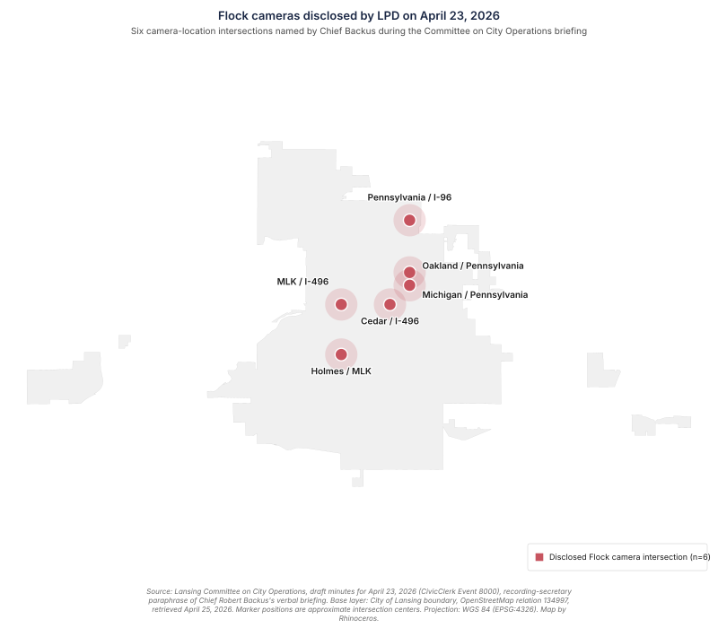

Lansing's First Flock Briefing
LANSING, Mich. — On Thursday, April 23, the Lansing Committee on City Operations held a 32-minute meeting at which Chief of Police Robert Backus described, for the first time in any sustained public setting, how the Lansing Police Department operates its Flock Safety camera program. The committee packet contained no written materials on the program. The chief's verbal presentation, captured in the recording secretary's draft minutes, is now the entire public record of how the department says the program is governed.
The minutes record two parts of the chief's account that are inconsistent on their face, and they record what the chief said was missing when asked about oversight.
The meeting
Three members of the Committee on City Operations were present: Trini Pehlivanoglu (Chair, At-Large), Clara Martinez (Vice-Chair, At-Large), and Ryan Kost (Member, Ward 1). Two staff from the Office of the City Attorney attended, Elizabeth Krochmalny and Keith Goodwin. Public Service Deputy Director Jeremiah Kilgore presented an unrelated compost-awareness item. Chief Robert Backus presented Item 5.C, the Flock discussion.
The meeting ran 32 minutes, from 4:05 PM to 4:37 PM, and the Flock discussion was the longest item on the agenda. The agenda format for the item was "DISCUSSION," meaning the committee was not scheduled to vote on the item, to refer it to another body, or to commit to a follow-up; the committee did none of those. No motion was made on the Flock item, no referral was issued to the Board of Police Commissioners or any other body, and no follow-up briefing or document was requested for the next meeting.
The minutes are a draft, watermarked "DRAFT," posted to the city's CivicClerk portal after the meeting and pulled on April 25. The minutes are the recording secretary's paraphrase, and the accounts below preserve the minutes' phrasing rather than verbatim quotes from the chief.
What the chief said
Chief Backus stated that 52 personnel have access to the Flock platform, all of whom "went through appropriate training." To run a query, an authorized user must "sign in, enter the plate number, state reason, and have a case number." Authorized use cases include stolen vehicles, AMBER alerts, missing or wanted persons, crimes against persons, felony crimes, and "official ongoing investigations." Misuse is "subject to discipline or criminal actions."
Six camera-location intersections were disclosed, described in the minutes as "the locations that are not concealed": MLK/496, Pennsylvania/96, Cedar/496, Michigan/Pennsylvania, Oakland/Pennsylvania, and Holmes/MLK. Chief Backus characterized the deployment trend as "the North end… centered around the original State grant to increase security around the Capitol." The chief did not name, date, or quantify the "original State grant," and did not disclose the count or locations of any cameras outside the six non-concealed intersections.

The "not concealed" qualifier in the minutes implies a deployment larger than the six locations name. Crowdsourced public-record signals point in the same direction. City Pulse reporting and the user-submitted deflock.me database have referenced about twenty cameras for the Lansing area. OpenStreetMap (the data source for the publicly-available Lansing ALPR Map) currently records more than thirty Flock-tagged camera locations in the Lansing area, of which roughly two dozen are tagged as operated by the Lansing Police Department. None of these counts is authoritative. The contributors are volunteers; a single physical pole is sometimes recorded as several nearby points, especially at freeway interchanges, three of which are among the six Chief Backus named; the data miss cameras and can include locations outside city limits; and OpenStreetMap does not distinguish concealed installations from visible ones. The numbers are consistent with the inference that the chief named a subset, but the actual count and the locations of any concealed cameras remain unstated in any city document the public can read.
When an officer runs a search in Lansing's Flock system, the officer has to enter a reason. According to the chief, two of those reason options are blocked in Lansing: immigration and reproductive health. The minutes do not record who set up the block, when it was applied, or whether it was configured by the department or by Flock as a default for the Lansing account.
Chief Backus reported program statistics in the briefing captured by the draft minutes: 391 vehicles or vehicle parts recovered, 97 associated arrests, and "estimated value of recover was over $1,000,000." Backus did not state the time period covered, the methodology behind the dollar figure, or how "associated" arrests were distinguished from arrests caused by Flock data versus arrests merely cross-referenced through it.
Two apparent contradictions in the paraphrased account
1. Memoranda of understanding with peer departments
Early in the presentation, Chief Backus described how data sharing with other agencies works. A memorandum of understanding (MOU) is a written agreement between police agencies that governs what data each can share with the other and under what conditions. The minutes record:
If they share an MOU must be in place, and they currently do not have any MOUs.
Later, in response to a question from Ryan Kost about whether a murder or theft investigation could justify an MOU, the minutes record:
Chief Backus said current MOUs are in place for emergency help or violent crime investigations.
Both statements are in the minutes, separated by several paragraphs of intervening Q&A. As paraphrased, they appear inconsistent. They may also describe two distinct objects flattened by the recording secretary's compression: Flock-specific data-sharing MOUs (none) and pre-existing emergency-and-violent-crime mutual-aid MOUs (in place). The records that would resolve the question, namely peer-agency MOUs on file with the City Clerk or City Attorney (or written attestations of their absence), were not produced at the meeting.
2. The 90-day policy and the 30-day practice
On data retention, Chief Backus stated that current policy indicates data is retained for 90 days, then said the department is "only retaining for 30 days due to volume of storage," phrased as "use it within 30 days or lose it."
A 30-day operational practice that runs tighter than a 90-day written policy is, on its face, a favorable disclosure: less data is retained than the policy authorizes. The documentation question is the inverse one: a written policy is the document a Police Commission would review, the document a civilian inspection would consult, and the document a Freedom of Information Act response would produce. If actual practice is 30 days, the written policy should reflect that. The committee did not ask why the written policy has not been amended to match the operational practice. Pehlivanoglu, the chair, referenced a pending state bill that would cap retention at 14 days and stated approval of the current 30-day practice.
What the chief confirmed is missing
Kost asked the chief whether there has been "any discussion of oversight from civilians or police commissioners." The minutes record the chief's response:
Chief Backus answered no, what drives the policies is their accreditation that currently stands at 90 police departments.
The Lansing Board of Police Commissioners is a charter-advisory body. Its April 21, 2026 meeting agenda, two days before this Committee on City Operations meeting, contained no Flock item. No Board of Police Commissioners agenda or meeting record reviewed for this account contains a Flock item across the Board's 2025 or 2026 meetings.
The Flock system keeps a record of every search an officer runs, called the audit log. Kost asked how the audit log is reviewed. Chief Backus answered "regularly but not scheduled, as an administrator I can view the access." Kost asked whether the chief is alerted when someone opens the audit log. Backus answered no, and explained that the audit log is a running list of who has used the system.
Asked whether anyone has been disciplined for misuse, the chief answered no. The chief had earlier described misuse as "subject to discipline or criminal actions," but a finding of zero discipline cases without a scheduled review of the audit log and without an alert when someone opens it establishes only the absence of recorded misuse, not the absence of misuse itself.
Pehlivanoglu asked Krochmalny, of the Office of the City Attorney, whether data captured by the system is subject to Michigan's Freedom of Information Act. The minutes record:
Ms. Krochmalny stated it has not come up but can speak to the City Attorney.
That is the entirety of the city's on-record position to date on whether Lansing residents can request the records that would let the public verify any of the chief's account.
What the council did not ask
The minutes record what was asked. They also record what was not asked. The contrast in the table below reads down the page: each row pairs a question that was asked, with its answer captured in the minutes, against a question of comparable specificity that was not asked. The right column was constructed by walking the line items in the case file's FOIA target list against the meeting record.
| Asked at the meeting (with the answer recorded in the minutes) | Not asked at the meeting |
|---|---|
| Pehlivanoglu: Can data be exported to save it for investigations beyond 30 days? Backus: no, but data can be flagged and saved as evidence. | The total amount Lansing has paid to Flock Safety to date, and the contract value remaining or renewal trigger. |
| Pehlivanoglu: Any reason for an MOU? Backus: yes, when other jurisdictions' vehicles transit the city. | Whether Lansing participates in Flock's national lookup networks (the products called Insight and Vehicle Hotlist). |
| Pehlivanoglu: Position on the 14-day-cap legislation? Pehlivanoglu stated approval of the current 30-day practice. | Whether out-of-state law-enforcement agencies, including federal agencies, can search Lansing's plate-read data. |
| Pehlivanoglu: Is the data subject to FOIA? Krochmalny (OCA): "It has not come up but can speak to the City Attorney." | Whether the Federal Sharing toggle that Flock introduced in January 2026 is enabled or disabled on Lansing's account. |
| Kost: MOU example like Kalamazoo? Backus confirmed. | How many external queries have been run against Lansing data in the past twelve months, by which agencies, with what reasons logged. |
| Kost: Anyone disciplined for misuse? Backus: "no discipline or misuse." | How the deployment was authorized in 2024 or 2025 (no Council vote was cited at the meeting). |
| Kost: How is data reviewed? Backus: "regularly but not scheduled." | The name, agency, dollar amount, or term of the "original State grant" the chief referenced. |
| Kost: Alerts when the audit log is accessed? Backus: no, just a running list of who has used it. | Whether the six disclosed camera intersections are the entirety of the deployment or a subset. |
| Kost: Discussion of civilian or police-commission oversight? Backus: "no, what drives the policies is their accreditation." | Whether Lansing data has been queried by ICE, CBP, FBI, DEA, or HSI, and the dates of any such queries. |
The right column is not a benchmark for what any council member should have asked at an initial discussion item. It is the set of records this account would need to verify the chief's statements, drawn from the public-records request list the case file already maintains. What the table makes visible is the asymmetry across questioner as much as across topic: Kost asked the discipline, audit, and oversight questions in the left column, Pehlivanoglu asked the retention and FOIA questions, and Martinez asked nothing on Item 5.C. Every question in the right column is the kind of question that documents, not paraphrased verbal answers, can finally settle.
The committee's three members took different approaches at the meeting. Kost asked the discipline, audit, and oversight questions that surfaced the gaps described above. Pehlivanoglu asked about retention, FOIA, and MOUs, and made the only substantive policy statement of the meeting, supporting the 30-day status quo and indicating skepticism of the 14-day cap proposed in pending state legislation. Martinez asked no questions on the Flock item, and moved every motion of the meeting.
What the meeting produced
The meeting produced no policy and added no written safeguards document to the public record. No FOIA directive was issued, no referral to another body was made, and no follow-up briefing was calendared. The committee accepted a verbal account from a single source, surfaced two contradictions in that account, confirmed the absence of three categories of oversight, and adjourned.
The 32-minute meeting did, however, produce a usable record. Twenty-three specific claims about the program, captured in the recording secretary's draft minutes, are now anchored to a named speaker on a specific date in a public proceeding. Each claim is a verifiable target for a Freedom of Information Act request that can ask the department to produce the records that confirm or contradict it. The chief's MOU contradiction can be resolved by producing the actual MOUs (or by attesting they do not exist). The 90-day-versus-30-day retention discrepancy can be resolved by producing the written policy text and the platform configuration. The "original State grant" can be named by producing the grant award letter. The 391-vehicle, 97-arrest, million-dollar-recovery figures can be reconciled by producing the underlying recovery data.
None of those records was produced on April 23, but each remains a request the city can still answer.
What the public can do now
File a records request
The city clerk accepts Michigan FOIA requests on behalf of LPD. A request that asks specifically for the records anchored to the chief's claims at this meeting includes:
- Any Memorandum of Understanding between LPD and a peer law-enforcement agency that governs Flock data sharing, or a written attestation that no such agreement exists
- The current written LPD policy on Flock use, including the document that establishes the "90-day" retention
- The Flock platform retention setting currently configured on the Lansing tenant, with screenshot or vendor confirmation
- The Flock platform configuration showing that "immigration" and "reproductive health" are blocked as search reasons, with screenshot or vendor confirmation, including the date the block was applied and by whom
- The grant award letter for the "original State grant" referenced by the chief, including the issuing agency, the dollar amount, and any conditions placed on the deployment
- The complete list of camera locations currently active in Lansing, with install date
- The audit log for the past twelve months, scrubbed of active-investigation content, listing every query run, every external-agency query against Lansing data, every reason field, and every accessing user
- Any City Attorney legal review of the Flock program, including any review of FOIA applicability to Flock data
- Any disciplinary record related to misuse, or a written attestation that no such record exists
Ask the Board of Police Commissioners to take it up
No Board of Police Commissioners agenda reviewed for this account has carried a Flock item in 2025 or 2026. Per the city's Board of Police Commissioners page, the chair is DeYeya Jones and the vice chair is Samuel Brewster. Public comment at the BOPC's monthly meeting can ask that the program be reviewed there as well.
Watch what happens next
The Committee on City Operations did not request a follow-up briefing. Whether one materializes at the committee's next meeting, after a records request returns, or not at all, is itself a data point on how the city handles surveillance-program oversight; the CivicClerk portal will publish the next agenda when it is set.
The record is now partly built
Before April 23, no Lansing official had described, in any sustained on-record forum, how the Flock program is governed. As of April 23, that has changed. The first sustained on-record account also includes two internal contradictions and confirms the absence of three categories of oversight. The next phase of the public record, the part that consists of documents rather than verbal account, depends on whether records requests are filed, whether the city responds, and whether what is produced corroborates the chief's account or contradicts it.
Also in this series
- Why Does Lansing Need Flock?. The pre-meeting account, published April 22: what was known about the program before the chief had spoken, what the empty packet meant, and what residents could ask before the meeting.
- Lansing ALPR Map. Interactive plot of 88 automatic license plate reader cameras and 104 CCTV cameras across the greater-Lansing area, filterable by operator and by Flock manufacturer, with each pin linking back to the underlying OpenStreetMap record from which it was built.
- Who Owns and Funds the Cameras Watching Lansing. The vendor behind the cameras, the private-capital backing, the state master contract Michigan agencies buy under, and what the "Flock Grant system" named on the committee agenda actually describes.
- What the Evidence and the Record Show About Flock's Cameras. The peer-reviewed research on ALPR crime reduction, the one independent accuracy test of Flock hardware, and the 2024 to 2026 record of misuse and federal-agency access in other jurisdictions.
Sources
Lansing Committee on City Operations draft minutes, April 23, 2026, retrieved from the CivicClerk portal on April 25, 2026. The minutes are a 3-page document watermarked "DRAFT," submitted by Recording Secretary Renee Richmond, Lansing City Council. As of April 25, no audio, no video, and no closed-caption file have been published for the meeting. The minutes are the recording secretary's paraphrase; quotations are taken from the minutes' phrasing and do not represent verbatim Chief Backus quotes. Lansing Board of Police Commissioners April 21, 2026 meeting record for the no-Flock-item finding, plus the city's Board of Police Commissioners page for officer identification. Mayor Schor's selection of Chief Backus announced on WILX, July 10, 2024. Michigan House Bill 5492 and House Bill 5493, introduced January 29, 2026. Flock Safety, "Does Flock share data with ICE?" for the January 2026 customer-side Federal Sharing toggle.